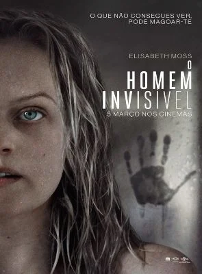
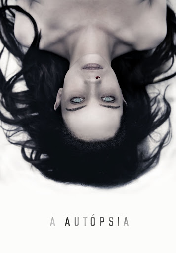
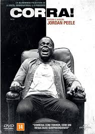
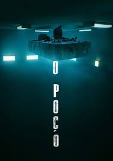

Adelaide e Gabe levam a família para passar um fim de semana na praia e descansar. Eles começam a aproveitar o ensolarado local, mas a chegada de um grupo misterioso muda tudo e a família se torna refém de seres com aparências iguais às suas.

Depois de forjar o próprio suicídio, um cientista enlouquecido usa seu poder para se tornar invisível e aterrorizar sua ex-namorada. Quando a polícia se recusa a acreditar em sua história, ela decide resolver o assunto por conta própria.
O corpo de uma mulher não identificada é descoberto em uma pequena vila na Virgínia. Eventos inexplicáveis começam a atormentar os donos do necrotério e os responsáveis por fazer a autópsia no cadáver.
Chris é um jovem fotógrafo negro que está prestes a conhecer os pais de Rose, sua namorada caucasiana. Na luxuosa propriedade dos pais dela, Chris percebe que a família esconde algo muito perturbador.
Em uma prisão onde os detentos são alimentados por uma plataforma descendente, os que estão nos níveis mais altos comem mais do que precisam enquanto os dos andares mais baixos ficam com as migalhas. Até que um homem decide mudar o sistema.
